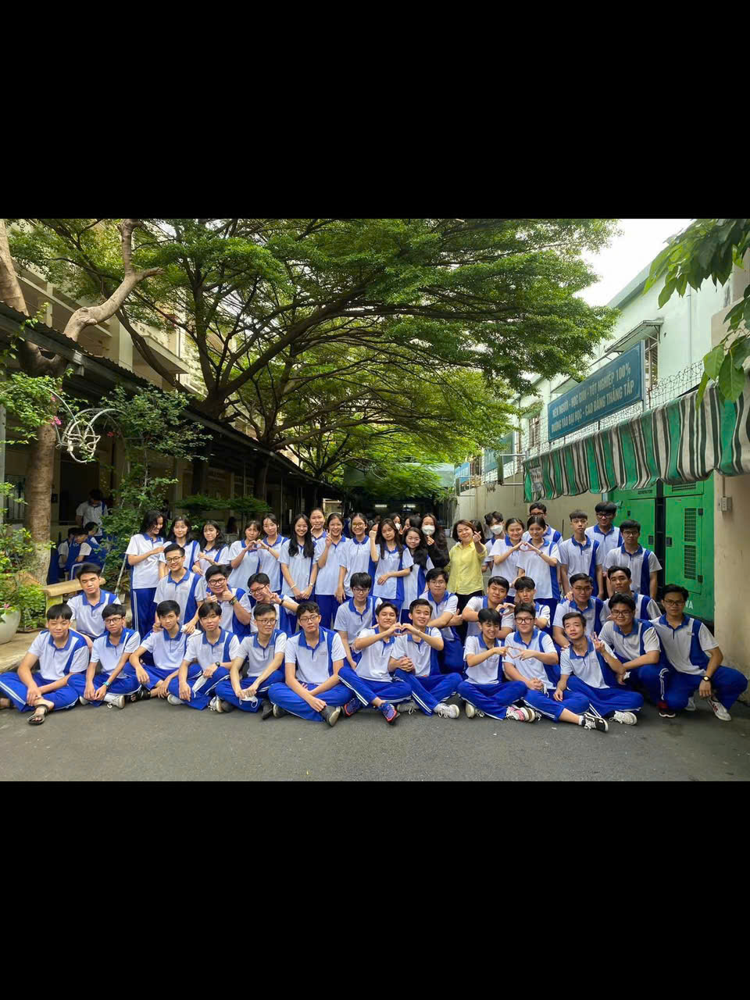
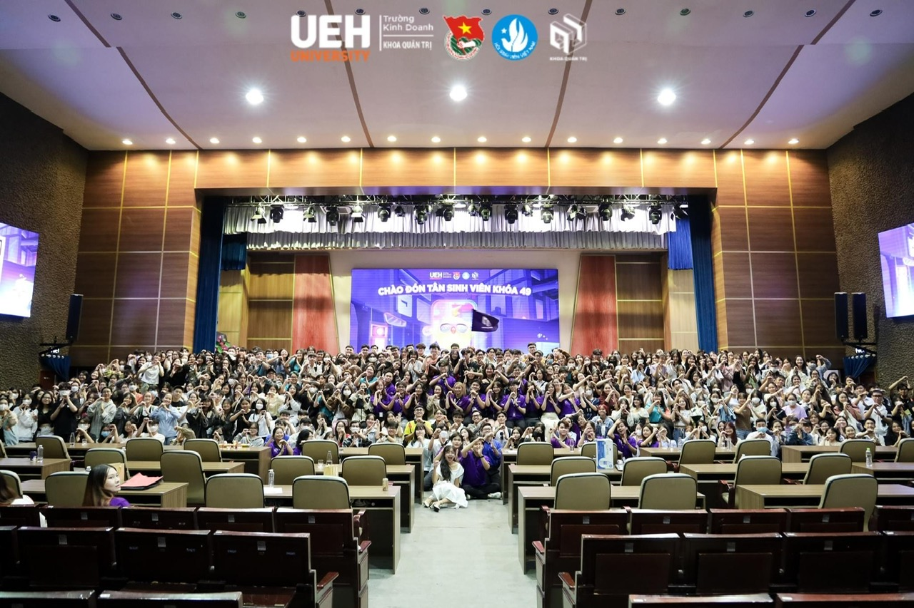

THE BEGINNING · 2023
Một năm để
bước ra ngoài.
2023 khép lại những năm tháng nội trú tại Nguyễn Khuyến và mở ra chặng đường đại học đầu tiên: tự lập hơn, dám nói trước đám đông hơn, và bắt đầu tìm kiếm môi trường phù hợp với mình.
Toán 9 · Lý 8.5 · Anh 9
Giao tiếp · Tư duy phản biện
và nhiều trải nghiệm phỏng vấn đầu tiên
Khép lại “lò rèn” Nguyễn Khuyến bằng một hành trang tự lập.
Trường THPT Nguyễn Khuyến là nơi mình học cách sống có kỷ luật trước khi học cách chinh phục mục tiêu. Mình học nội trú, gặp gỡ bạn bè đến từ nhiều tỉnh thành, xa gia đình và dần quen với nhịp sống có lịch trình: ăn uống, học tập, nghỉ ngơi đều cần tự quản lý. Những năm tháng ấy đúng nghĩa là một “lò rèn” — khắt khe nhưng cho mình sự bền bỉ, tính tự giác và cảm giác biết ơn với mỗi kết quả đạt được.
Mình chọn khối A1 (Toán, Lý, Anh) và khép lại kỳ thi THPT Quốc gia năm 2023 với 26.5 điểm: Toán 9, Tiếng Anh 9 và Vật lý 8.5. Dù chưa hoàn toàn chạm đến kỳ vọng ban đầu, đây vẫn là kết quả khiến mình trân trọng sau một hành trình học tập dài. Khi tốt nghiệp, mình vẫn lưu luyến và tự hào về ngôi trường đã rèn cho mình thói quen nỗ lực mỗi ngày.
Tuy nhiên, nền tảng thuần học thuật cũng khiến mình nhận ra một khoảng trống: mình chưa từng thuyết trình, chưa thật sự quen với máy tính hay PowerPoint — những kỹ năng rất cần khi bước vào đại học. Nhận ra sớm điều đó khiến mình chủ động chuẩn bị thay vì chờ đến lúc bắt đầu.


Chủ động học kỹ năng giao tiếp trước khi vào đại học.
Ngay sau kỳ thi THPT, trước cả khi biết chắc mình sẽ học ở đâu, mình đã tìm lớp kỹ năng để chuẩn bị cho một môi trường mới. Nhờ đó, mình biết đến Nhà Văn hóa Thanh niên TP.HCM và đăng ký khóa Kỹ năng giao tiếp. Lớp học mang đến một cách học hoàn toàn khác với cấp ba: không chỉ ngồi nghe giảng, mà phải quan sát, chia sẻ và trực tiếp thực hành.
Lần đầu cầm micro và giới thiệu bản thân trước khoảng 30 người là một trải nghiệm mình không quên. Phần giới thiệu diễn ra ổn, nhưng mình vẫn cảm nhận rất rõ giọng nói run và nhịp tim nhanh. Khoảnh khắc ấy không làm mình lùi lại; ngược lại, nó cho mình thấy sự tự tin là thứ có thể rèn. Từ khóa học này, mình bắt đầu nghĩ rằng: lên đại học, mình muốn thử làm lớp trưởng — dù đó sẽ là lần đầu tiên.
Đậu nguyện vọng 1 UEH và dám nhận vai trò lớp trưởng ngay từ buổi học đầu tiên.
Đỗ Đại học Kinh tế TP.HCM — nguyện vọng 1 và đúng ngành Quản trị mình đã lựa chọn từ thời cấp 2 — là một cột mốc đặc biệt. Đây cũng là ngôi trường mẹ và dì mình từng theo học từ những năm đầu 2000. Tháng 9/2023, mình lần đầu đến UEH, tham gia buổi chào đón tân sinh viên của Khoa Quản trị và cảm nhận rất rõ một hành trình mới đang mở ra, dù lúc đó chưa quen ai.
Ở buổi học Triết học Mác – Lênin đầu tiên, mình đã giơ tay ứng cử ban cán sự. Trước đó, mình từng lo vì chưa có kinh nghiệm, sợ không cạnh tranh được với người khác. Nhưng khi cô hỏi, mình quyết định thử; may mắn là không có ai tranh cử. Mình tiếp tục làm lớp trưởng bộ môn khác và sau buổi sinh hoạt lớp, được đề bạt làm lớp trưởng. Những lần đứng trước lớp đầu tiên vẫn rất run, nhưng chính chúng trở thành nền móng cho sự tự hào sau này.
Đi qua năm đợt tuyển để hiểu môi trường nào thật sự phù hợp với mình.
Vào mùa tuyển thành viên tháng 9–10/2023, mình đã gửi CV vào năm tổ chức khác nhau — tất cả đều ở Ban Đối ngoại. Mình tin đây là nơi đòi hỏi sự chuyên nghiệp, cẩn thận và kỹ năng giao tiếp; đúng những điều mình muốn rèn vào thời điểm ấy. Điều đáng nhớ là mình đều vượt qua vòng CV và có cơ hội chạm vào nhiều hình thức tuyển chọn: phỏng vấn nhóm trực tuyến, phỏng vấn trực tiếp và phỏng vấn cá nhân.
Mỗi kết quả, kể cả một email bỏ lỡ hay một lần không được chọn, đều giúp mình trưởng thành hơn trong cách quan sát, chuẩn bị và lựa chọn. Mình không còn xem việc “rớt” là một thất bại tuyệt đối; đôi khi đó là lời nhắc để điều chỉnh kỹ năng, hoặc đơn giản là để tìm đúng nơi hợp với mình hơn.
Khơi mở tư duy phản biện và kết thúc một năm bằng tinh thần học hỏi.
CTC là nơi lần đầu mình nghe rõ về “tư duy phản biện”, từ đó mình chủ động đăng ký khóa học cùng tên tại Nhà Văn hóa Thanh niên vào tháng 10. Đến cuối tháng 11, mình hoàn thành khóa học và nhận chứng nhận. Sau kỹ năng giao tiếp, đây là mảnh ghép tiếp theo giúp mình không chỉ dám nói, mà còn bắt đầu học cách đặt câu hỏi, nhìn vấn đề từ nhiều phía và bảo vệ quan điểm có lý do.
2023 vì vậy không chỉ là năm chuyển từ THPT lên đại học. Đó là năm mình kết thúc một hành trình cũ, bắt đầu một môi trường mới và liên tục tự tạo cho mình những lần “đầu tiên”: lần đầu cầm micro, lần đầu ứng cử lớp trưởng, lần đầu phỏng vấn CLB, lần đầu bước vào một đội nhóm mình thực sự muốn thuộc về.
YEAR IN REVIEW
Đúc kết năm 2023
- Hoàn tất chặng đường THPT Nguyễn Khuyến với điểm thi A1 26.5 và một nền tảng kỷ luật, tự lập.
- Trúng tuyển UEH – nguyện vọng 1 ngành Quản trị, bắt đầu vai trò lớp trưởng và nhóm trưởng học phần.
- Hoàn thành hai khóa kỹ năng: Kỹ năng giao tiếp và Tư duy phản biện tại Nhà Văn hóa Thanh niên TP.HCM.
- Trải nghiệm năm đợt tuyển thành viên, nhiều hình thức phỏng vấn và tìm được môi trường phù hợp tại Dynamic.
- Bài học lớn nhất: sự chuẩn bị, sự chủ động và lòng can đảm để thử lần đầu có thể mở ra những hướng đi rất khác.